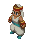
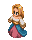
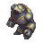
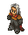
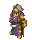

|
Name |
Profile |
|
Ramza Beoulve |
The youngest son of the Beoulve noble family, Ramza becomes disillusioned by the corruption in Ivalice, guided by his strong sense of justice. |
|
Agrias Oaks |
A righteous Holy Knight and the personal bodyguard to Princess Ovelia. She is a member of the Lionsguard, knights who serve the royal family. |
|
Mustadio Bunansa |
A young brilliant Machinist from the Clockwork City of Goug who joins the party after Ramza helps him and his father. |
|  |
Rapha Galthena |
A Skyseer and part of the Khamja assassination squad. She is Marach's younger sister. |
|
Marach Galthena |
A Netherseer and part of the Khamja assassination squad. He is Rapha's older brother. |
|
"Thundergod Cid" Orlandeau |
A powerful and legendary swordsman, general of the Order of the Southern Sky. He is a close friend of Ramza's father and adoptive father to Orran. |
|
Meliadoul Tengille |
Divine Knight and former member of the Knights Templar, who saw the truth about the auracites and joins Ramza to put an end to her father's plan. |
|
Beowulf Cadmus |
A Templar and former captain of the Gryphon Knights of Lionel, he now spends his time looking for his fiancée Reis Duelar. |
|  |
Reis Duelar |
Fiancée of Beowulf Cadmus, encountered in the form of a Holy Dragon. |
|
Luso Clemens |
The protagonist of Final Fantasy Tactics A2: Grimoire of the Rift.. |
|
Cloud Strife |
The spiky-haired protagonist of Final Fantasy VII finds himself lost in Ivalice. |
 |
Balthier |
A sky pirate from Final Fantasy XII. |
|  |
Construct 8 |
An autonomous robot from the days of Saint Ajora Glabados. |
|
Name |
Profile |
|
Delita Hyral |
Delita's story is widely known through Ivalice as that of a commoner who became a king and brought peace to a chaotic kingdom. |
|
Alma Beoulve |
Like her brother, Ramza, Alma is headstrong, cheerful, and bright, willing to risk her life in battle for his sake. |
|
Ovelia Atkascha |
She is involved in various schemes that result in her being used as a tool by the nobles to gain their hold to the Ivalician throne. |
|
Orran Durai |
Orran is passionate about scholarly pursuits and seeks to deliver the truth about the world to the masses. |
|
Zalbaag Beoulve |
He is the middle son of the House Beoulve and a fearsome warrior. |
|
Name |
Profile |
|
Goffard Gaffgarion |
The definition of a mercenary: willing to commit to any act, provided the price be high enough. |
|
Wiegraf Folles |
The leader of the Corpse Brigade terrorist organization. |
|  |
Messam Elmdore |
He embodies the archetype of the ambitious, prideful noble with a keen sense of political savvy and a willingness to manipulate those around him. |
|
Dycedarg Beoulve |
He is the older brother of Ramza who seeks to elevate the House of Beoulve's no matter the cost to gain power and enrich himself. |
|
Cletienne Duroi |
Member of the Knights Templar following Folmarv. |
|
Barich Fendsor |
Member of the Knights Templar of the corrupt Church of Glabados who wields a gun. |
|  |
Folmarv Tengille |
The leader of the Knights Templar of the corrupt Church of Glabados. |